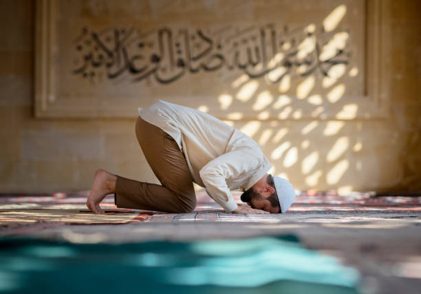
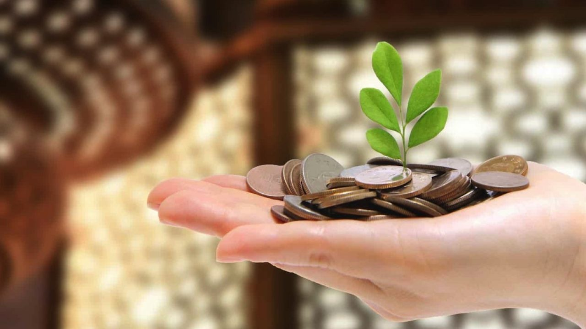
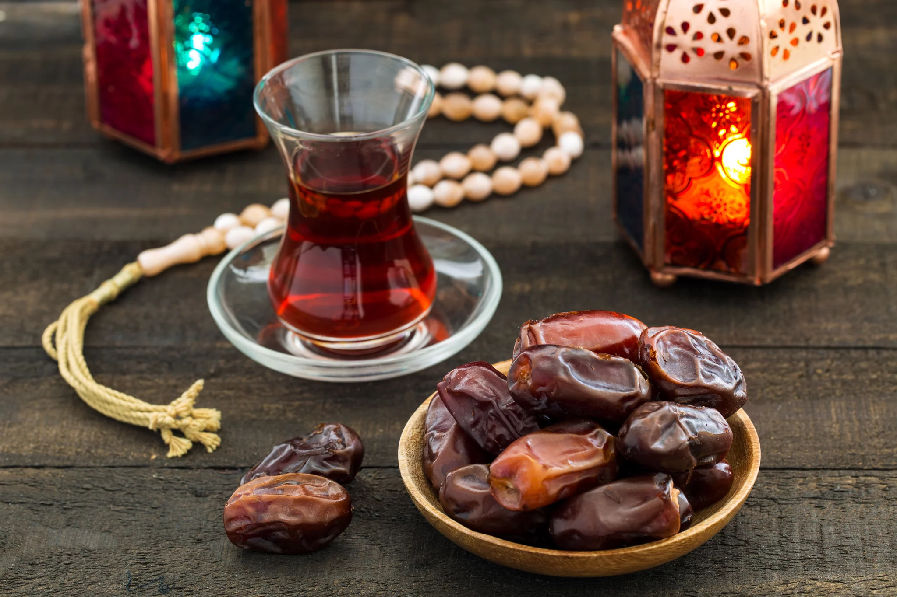
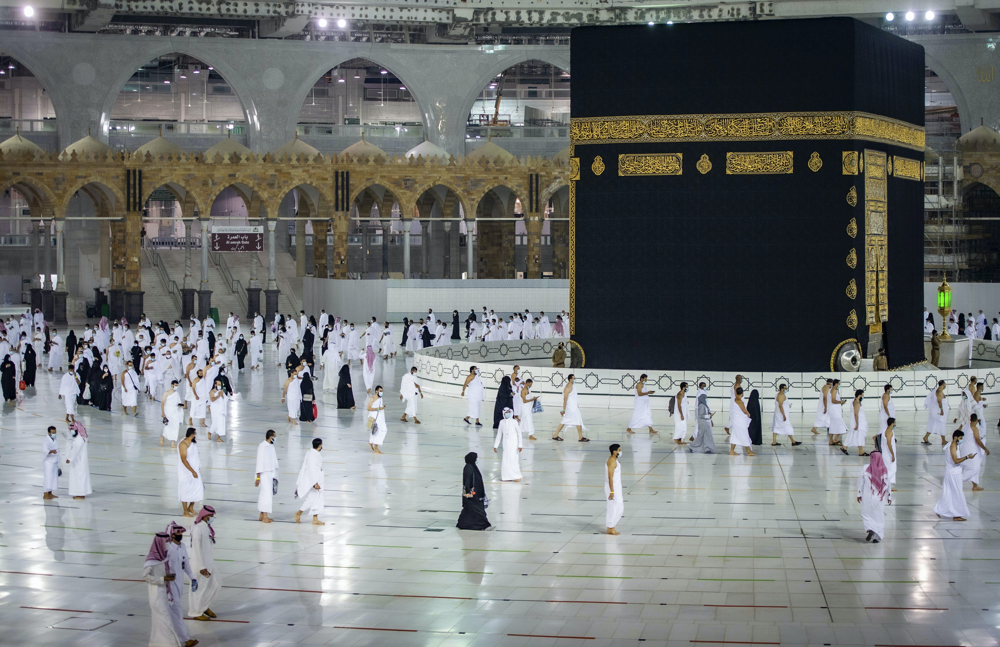

Ramadan is the ninth month of the Muslim calendar, it is a month of intense spiritual rejuvenation with a heightened focus on devotion, during Ramadan Muslims fast from before sunrise to sunset and spend extra time reading the Qur'an and performing special prayers.
Ramadan begins and ends with the appearance of the crescent moon. Because the Muslim calendar year is shorter than the Gregorian calendar year, Ramadan begins 10–12 days earlier each year, allowing it to fall in every season throughout a 33-year cycle.
| "shahada" (Profession of Faith) |
it's an islamiic oath that reads: "I bear witness that there is no deity but God, and I bear witness that Muhammad is the messenger of God." is central to Islam. |
| salat (Prayer) |
prayer is done 5 times a day facing Mecca. |

|
| zakat (alms giving) |
Zakat is a form of almsgiving, often collected by the Muslim Ummah treated in Islam as a religious obligation, which, by Quranic ranking, is next after prayer in importance. As one of the Five Pillars of Islam, zakat is a religious duty for all Muslims who meet the necessary criteria of wealth to help the needy.
|
 |
| sawm (Fasting) |
During the daylight hours of Ramadan, all healthy adult Muslims are required to abstain from food and drink. |

|
| hajj (Pilgrimage) |
The sacred pilgrimage to Mecca required of every Muslim at least once in their lifetime if it is within their means |

|